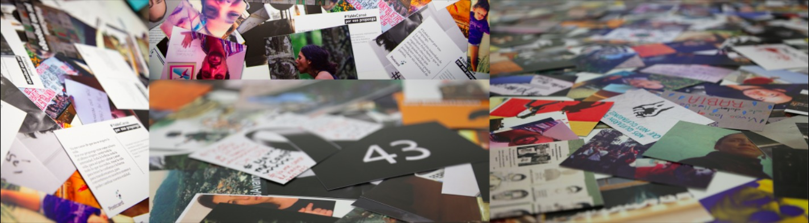

Contacto
poresopropongo.mx
Facebook:
facebook.com/poresopropongo
Twitter:
@poresopropongo
Follow @poresopropongo
Email:
poresopropongo@gmail.com
Prensa
Fotos y videos de exhibiciones y entregas de las postales
Boletín de Prensa 03/MAR/2015
Fotos de las entregas de las postales a los Poderes Ejecutivo, Legislativo y Judicial, a la CNDH y al INE (marzo 2015)
Boletín de Prensa 03/FEB/2015
Postales que acompañan al Boletín de Prensa (imágenes en alta resolución)
Comunicado de Prensa, enero 2015
Hoja de Datos, febrero 2015
